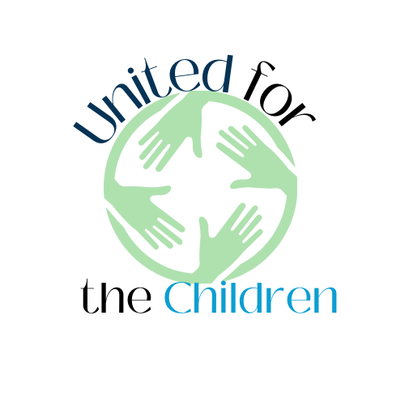

As a part of a team, I have worked on communications campaigns for the Texas Department of Transportation, The Great Springs project in Travis County and TXST Student Involvement and Engagement. The importance of these experiences was to produce compelling PR strategies, create content graphics, and study analytics for the success of the organizations. Below, you will find past projects for college courses.
Pilates WebsiteFundamentals of Digital and Online Media educated me on the history of the internet, world wide web, the workings of the web, tech professionals and creating HTML and Wordpress websites. Above you will find my first Wordpress website, inspired by one of my favorite exercise hobbies!
United for the ChildrenUnited for the Children is a nonprofit organization that I built for my Advanced PR Writing course. Located on the Newsroom page of the sample website, you will find professional writing examples.
The brand logo for United for the Children was created on Canva.
Below are a few aspects of Public Relations I have continously practiced and built expertise on within the past two years:
For inquires contact testemail@yahoo.com